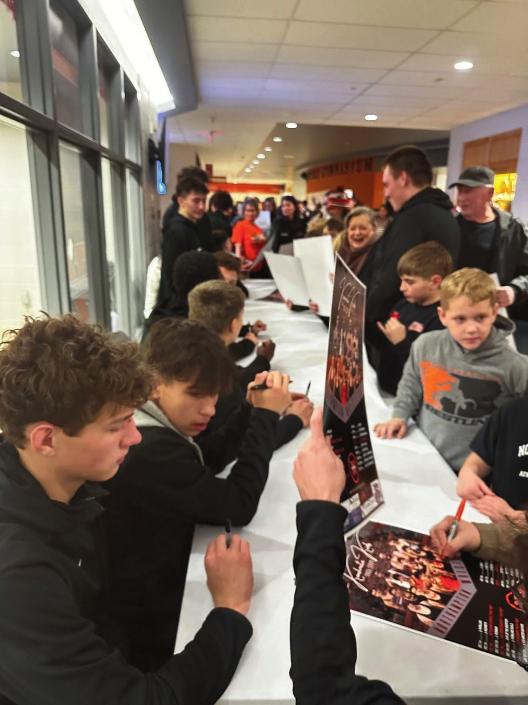
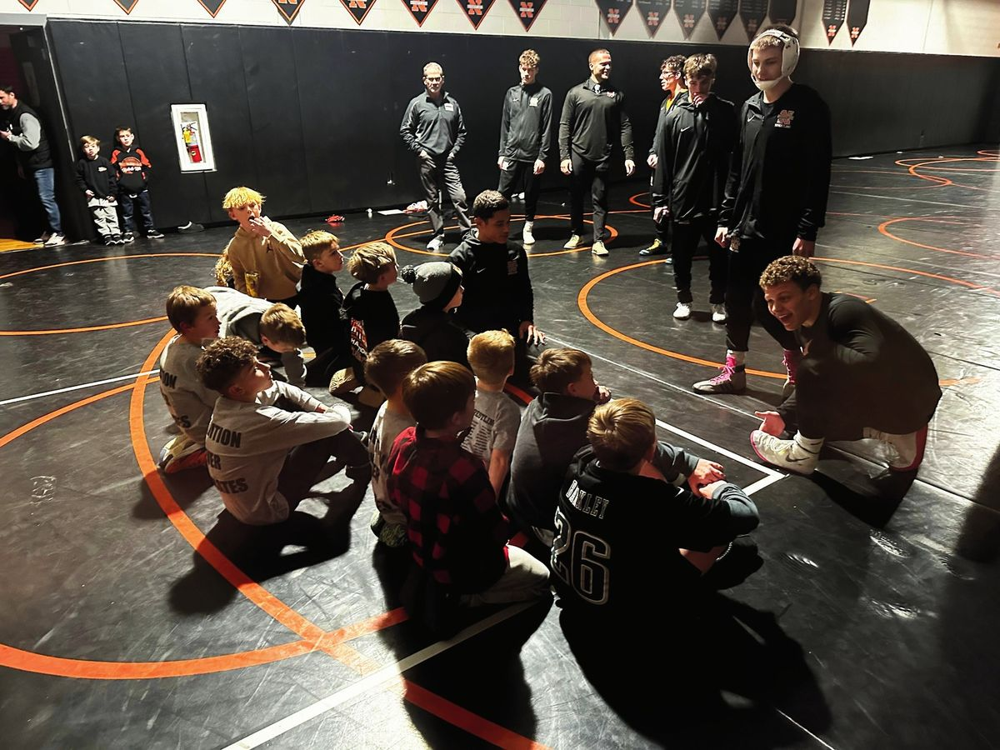

Youth Wrestling
Grades K–6. Where every Konkrete Kid starts.
Northampton youth wrestling
Our youth program competes in the Valley Elementary Wrestling League (VEWL) for wrestlers in kindergarten through 6th grade. More than 100 kids wrestle each year on three teams:
- Northampton BlackVarsity and JV
- Northampton OrangeVarsity and JV
- NoviceGrades K–2
The goal is simple: carry on the tradition of Northampton wrestling, teach strong fundamentals, and build friendships and a community that last long after the season ends. Many of today’s varsity wrestlers and coaches started right here.
Northampton Youth Wrestling · Konkrete Kids · 2026–27
One program.
Two strong teams.
Starting in 2026–27, we’re building Black and Orange as equals: balanced rosters, steady coaches, and a team for every wrestler from Novice to junior high.
How the program is built
Northampton Black
- Full varsity and JV lineups
- Its own coaching staff, year to year
- Built to stay together through 6th grade
Northampton Orange
- Full varsity and JV lineups
- Its own coaching staff, year to year
- Built to stay together through 6th grade
Still one practice room
Black and Orange varsity and JV keep holding joint practices. Day-to-day practice structure barely changes.
What this means for your child
- A team they’re proud of. Our goal: no A team or B team, just two strong teams.
- Meaningful matches. Two competitive teams mean close, real competition all season.
- Coaches who know them. The same staff for years, watching them grow.
- Teammates for the journey. Built to stay together from Novice to junior high.
Looking ahead
The roadmap
When does a wrestler move?
Wrestlers usually stay put, but coaches can move a wrestler who’s stuck behind a teammate on JV. For example:
- 3rd grA wrestler is placed on Orange.
- 5th grThey improve a lot, but they’re the same weight as Orange’s varsity starter, so they’re stuck on JV.
- MoveCoaches move them to Black to wrestle varsity. Now both wrestlers are varsity starters.
Moves are the exception, made by coaches for the wrestler’s good.
The roadmap
- 2026–27: a transition year. Some current wrestlers may move to help balance the rosters. Schedules are set by the previous year’s results and will even out as the teams balance.
- Each fall: new Novice grads are placed to balance the teams.
- Every season’s end: we review what worked and adjust.
- In a few seasons: two equally strong teams.
What the experts say
Built on the best advice in the sport.
Four principles behind our model, in the words of wrestling’s leaders and youth-sports researchers.
1Develop for the long run, not early wins
“Focus on long-term learning over winning.” Its standard for ages 5–12.
Youth program success “should not be measured by wins and losses alone.”
In our model › Kids grow on one team for years.
2Don’t sort or label kids too early
Ended national titles for its youngest ages to stop “super teams” of 9- and 10-year-olds.
Don’t cut kids. Add teams so more children play.
In our model › No A or B team. An even mix on each team, neither ranked above the other.
3Keep young wrestlers off the scale
No weight loss for ages 5–12, other than for health reasons.
Rapid weight cutting is “potentially life threatening.”
In our model › Team placement never depends on making weight.
4Keep every kid in the sport
Its goal: “involving as many young people as possible.”
Kids enjoy close competition more than blowouts, even when they lose.
In our model › Two competitive teams, so every kid has a real team and a reason to stay.
Sources: American Academy of Pediatrics (2024; HealthyChildren.org) · USA Wrestling, Athlete Development Model · National Wrestling Coaches Association · youth-sports dropout surveys · NFHS · Aspen Institute Project Play · USA Hockey · Wrang et al. (2023) · J. Engh, National Alliance for Youth Sports (2019).
For youth parents
How to be a Konkrete Kids parent
Ten things that matter most.
New to the program? See how it works first ›
- 1Love them the same, win or lose.Say it before and after: “I love to watch you wrestle.”
- 2Be a great spectator.Coaches coach, referees ref, wrestlers wrestle. Parents cheer.
- 3Cheer effort, not just results.A loss with real effort is a good day.
- 4Make the car ride a safe place.Let them talk first, and leave the lessons to the coaches.
- 5Keep it fun.Fun is the number one reason kids stay in wrestling.
- 6Don’t compare.Every child grows on their own timeline.
- 7No weight cutting.Youth wrestlers compete at their natural, healthy weight.
- 8Honor the game.Respect referees, opponents, and coaches. Cheer for our team, not against theirs.
- 9Healthy habits first.Good sleep, good food, schoolwork done, and clean gear.
- 10Trust the coaches.Your encouragement and trust in the process make all the difference.
Wrestling belongs to the kids. It’s their thing, not ours.
Built on guidance from USA Wrestling, the American Academy of Pediatrics, Aspen Institute Project Play, and the National Wrestling Coaches Association.
Questions families ask
Who can wrestle?
Boys and girls in kindergarten through 6th grade who live within the Northampton Area School District. No experience needed.
How is the youth program set up?
Wrestlers start in Novice, generally grades K–2, where the focus is fun and fundamentals. From there they move up to Northampton Black or Northampton Orange. Each of those teams has its own varsity and JV lineups and its own coaching staff. An experienced 2nd grader may move up early.
How are wrestlers placed on Black or Orange?
Coaches place wrestlers so each team gets an even mix of experience levels and weights. Neither team is ranked above the other.
Who do we wrestle against?
Our teams compete in the Valley Elementary Wrestling League (VEWL) against other youth programs in the area.
What’s the difference between varsity and JV?
Each team’s varsity lineup has one wrestler at each weight class. Everyone else wrestles JV, so every wrestler gets matches. JV wrestlers can earn a varsity spot during the season.
How do wrestlers get matched up?
By weight. Wrestlers compete against kids at about the same weight, so matches are fair.
How does a match work?
Wrestlers score points for takedowns, escapes, reversals, and near falls. A pin, holding the opponent’s shoulders to the mat, ends the match right away. If there’s no pin, the wrestler with more points wins.
Does my child need to lose weight?
No. Youth wrestlers compete at their natural, healthy weight. Team placement never depends on making weight.
What does my child need to wrestle?
Wrestling shoes and headgear, plus comfortable athletic clothes for practice. Ask your child’s coach before buying anything else.
What if my child misses practice?
In-season practice and match attendance is mandatory. If your child must miss practice due to illness or life getting in the way, please contact your child’s coach in advance.
What happens after 6th grade?
Wrestlers move up to the junior high team in 7th grade (grades 7–9; 9th graders can wrestle junior high or high school), then to the high school program.
How do we sign up?
Registration runs through the NAA youth program: register online.
Keep exploring
Novice · Black · Orange
How it works
How wrestlers start in Novice and move up to Black or Orange.
See the program ›For youth parents
Parent guide
How to be a Konkrete Kids parent: ten things that matter most.
Read the guide ›Grades K–6
Register
Sign up through the NAA youth program.
How to register ›Every level
Parent information
Our mission, the honor code, communication, health and weight, and the booster club.
Parents page ›
